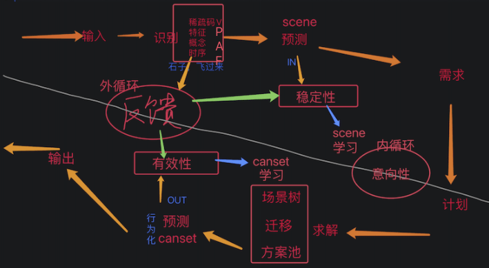
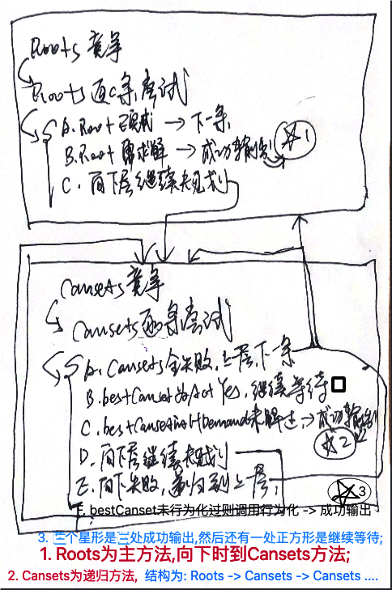

AI系列之《2024.06-08：搬运闭环、连续视觉与多向觅食》

来源：HELIX_THEORY/手稿/assets/722_HE模型流程图.png

来源：HELIX_THEORY/手稿/assets/723_TCPlanV2模型图.png
来源：Note32.md、Note33.md
6 到 8 月，手稿先整理 HE 模型流程图，处理 OutSPDic、多层 H 任务嵌套时的 H 迁移，再推进学搬运、用搬运、TCPlanV2、连续视觉、HCanst 知识结构和多向觅食训练。
“搬运、去皮、飞至、吃掉”连起来跑通，是一个重要里程碑。它意味着系统不只是学会单步动作，而能把多个子任务串成长期目标链。
连续视觉的加入，让环境感知从离散截图走向持续输入。8 月的多向觅食训练则开始扩展方向与场景变化，系统必须在不同方向、距离和目标状态下泛化。